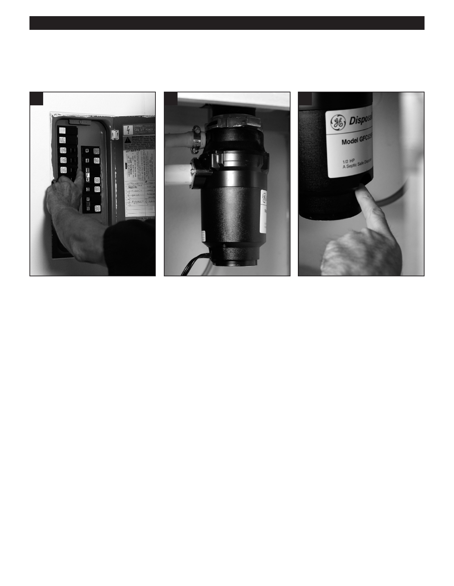

PA RT I C I PA N T R E S O U R C E G U I D E
Fixing a Stuck Garbage Disposal Flywheel (continued)
How-to Steps
1
3
5
1. Turn off the power to the disposal at 3. The disposal in the pictures above,
4. Press the reset button at the bottom
the main service panel.
does NOT use an offset wrench to
of the disposal.
2. Verify that the power is off by flipping
“unstuck” the flywheel. The only way
5. Turn on the power to the disposal at
the disposal switch.
to un-jam this model is through the
the service panel.
drain opening.
6. Turn on the water.
7. Flip the disposal on and off several
times (in quick short bursts) to
spin the flywheel and wash any
obstruction down the drain.
43